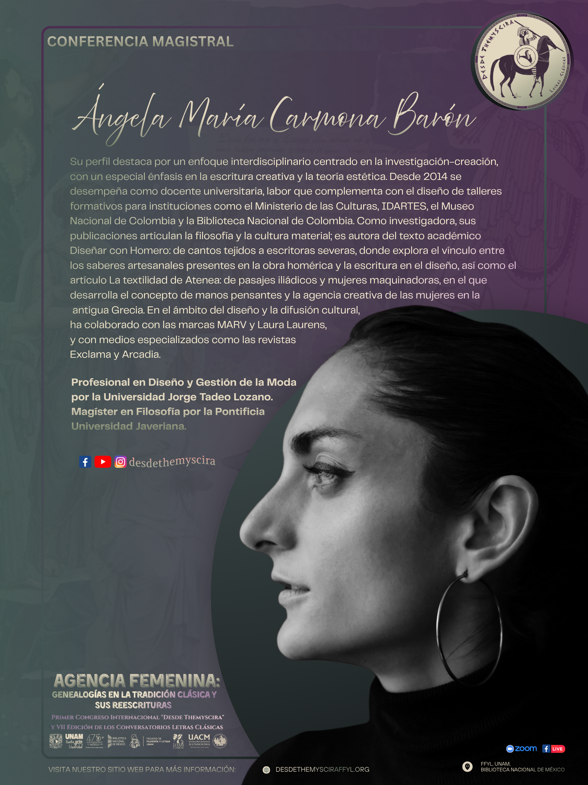
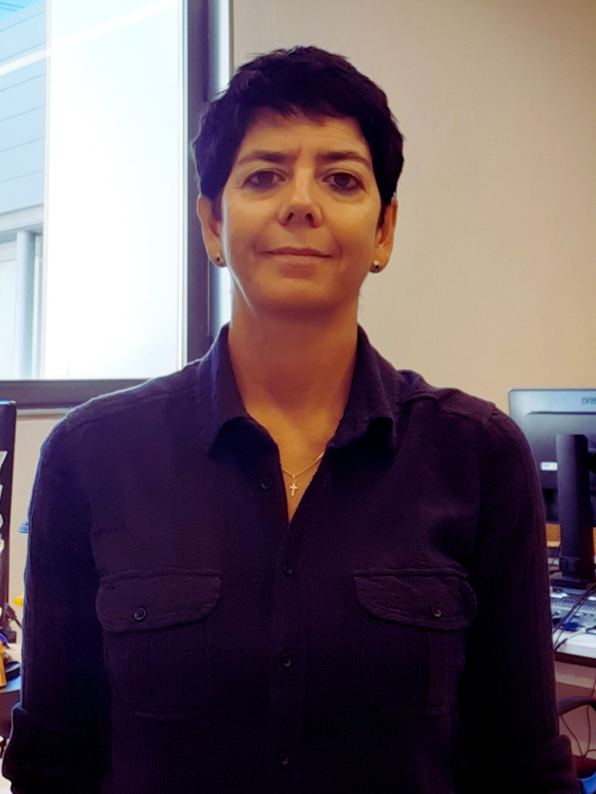
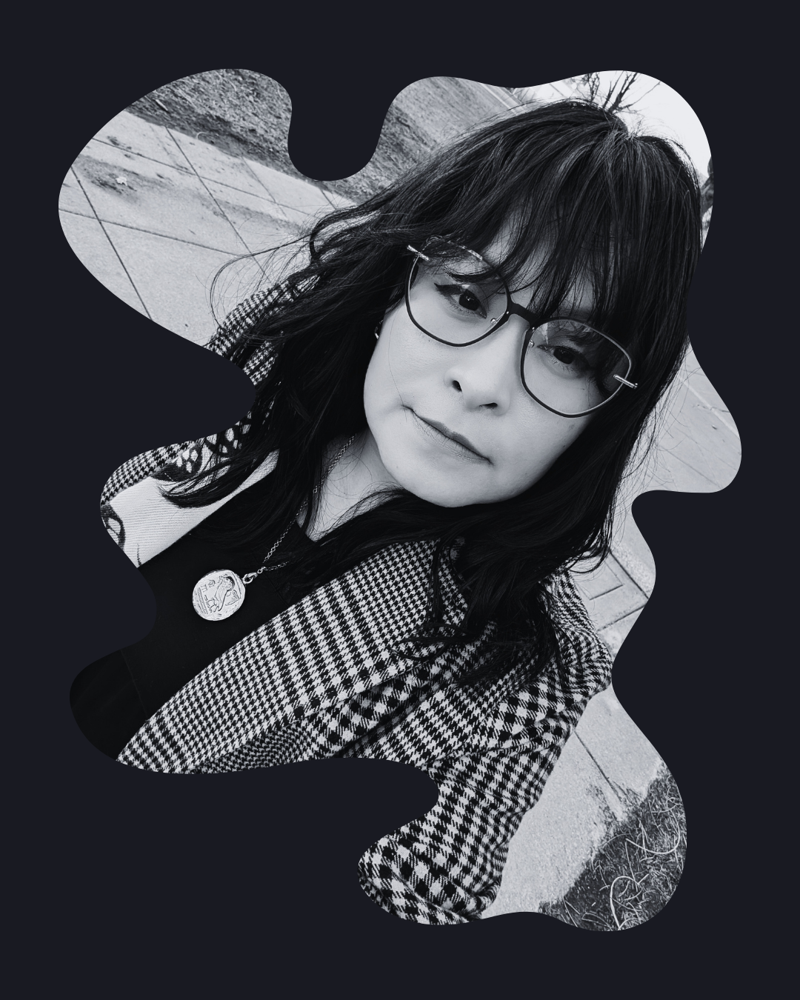

Primer Congreso Internacional "Desde Themyscira"
y VII Edición de los Conversatorios Letras Clásicas
AGENCIA FEMENINA:
GENEALOGÍAS EN LA TRADICIÓN CLÁSICA Y SUS REESCRITURAS
Espacio de convergencia internacional para repensar las matrices de la antigüedad grecolatina, las dinámicas de poder, los saberes textiles, la corporalidad, la filosofía y la capacidad de agencia de las mujeres en diálogo con el presente.
 🔍 Ampliar Cartel
🔍 Ampliar Cartel
Sedes Principales
Facultad de Filosofía y Letras (UNAM)
Biblioteca Nacional de México (4º Piso)


Conferencias Magistrales
Figuras consagradas de la filología clásica, la iconografía vascular y los estudios de género invitadas a inaugurar, mediar y clausurar el diálogo del congreso.
 Magistral Inaugural
Magistral Inaugural
Elsa Rodríguez Cidre
UBA / CONICET • Argentina
"Agencias femeninas trágicas: algunos ejemplos euripideos"

Magistral IntermediaÁngela María Carmona Barón
Javeriana / Utadeo • Colombia
"Entre textiles y otros textos: pasajes de la obra homérica y un puñado de mujeres maquinadoras"

Magistral de HonorMargarita Moreno Conde
MAN Madrid • España
"Guardianas de la memoria. Las mujeres ancianas en las imágenes de los vasos griegos"
Elena Giusti
University of Cambridge • Reino Unido
"Dido's Voice"
Programa General del Congreso
Haz clic en cualquier bloque o mesa para consultar las salas, aforos, la persona que modera y las pestañas con las ponencias y resúmenes.
| Lunes 9 | Martes 10 | Miércoles 11 | Jueves 12 | Viernes 13 |
|---|---|---|---|---|
|
Inauguración
10:00 - 10:30 | Sala F / Zoom
Magistral Inaugural
10:30 a 11:50 | Sala F / Zoom
Elsa Rodriguez Cidre
|
Mesa 3
10:00 a 11:30 | Salón de actos / Zoom
Modera: Leonor Hernández Oñate
|
Conferencia Magistral
10:00 a 11:30 | Salón de actos / Zoom
Margarita Moreno Conde
|
Plenaria 1
10:00 a 11:30 | Biblioteca Nacional / Zoom
Modera: Evelia Arteaga Conde
|
Conferencia Magistral
10:00 a 11:30 | Sala F / Zoom
Elena Giusti
|
| ☕ Pausa café | ||||
|
Mesa 1
12:00 a 13:30 | Sala F / Zoom
Modera: Evelia Arteaga Conde
|
Conferencia Magistral
12:00 a 13:30 | Salón de actos / Zoom
Ángela María Carmona
|
Mesa 5
12:00 a 13:30 | Salón de actos / Zoom
Modera: Leonor Hernández Oñate
|
Mesa 7
12:00 a 13:30 | Biblioteca Nacional / Zoom
Modera: Marianela Santoveña R.
|
Mesa 9
12:00 a 13:30 | Sala F / Zoom
Modera: Olivia Isidro Vázquez
|
| 🍴 Pausa comida | ||||
|
Mesa 2
16:00 a 17:30 | Sala F / Zoom
Modera: Marianela Santoveña R.
|
Mesa 4
16:00 a 17:30 | Únicamente Zoom
Modera: Alejandra González J.
|
Mesa 6
16:00 a 17:30 | Únicamente Zoom
Modera: Alejandra González J.
|
Mesa 8
16:00 a 17:30 | Salón de actos / Zoom
Modera: Martha Cecilia Jaime G.
|
Plenaria 2
15:00 a 16:30 | Sala E / Zoom
Modera: Jeannet Ugalde Q.
Clausura del Congreso
16:30 a 17:00 | Sala E / Zoom
Comité de Organizadoras
|
Directorio de Ponentes y Participantes
Conoce a las investigadoras y ponentes que integran las mesas del congreso, sus líneas de trabajo y los resúmenes de sus comunicaciones.
img/participantes/ o enlazarse directamente en la ficha curricular de cada ponente.
Líneas Temáticas & Comité Organizador
Conoce los 6 ejes temáticos del congreso coordinados por las investigadoras de Desde Themyscira. Haz clic en el nombre de cada responsable para desplegar su fotografía y breve semblanza académica.
Agencia femenina en (y a través de) los textos literarios
Indagación filológica y literaria en torno a la palabra poética femenina, las estrategias de autoría, la reescritura de mitos clásicos y los relatos de resistencia discursiva.

Leonor Hernández Oñate
IIFL - CEC / FFyL • UNAM
Grupo de Investigación Desde Themyscira
Modera: Mesa 3, Mesa 5 & Magistral (Vie)Leonor Hernández Oñate es doctora en Humanidades (Literatura) por la Universidad Autónoma Metropolitana-Iztapalapa y Maestra en Letras Clásicas por la Universidad Nacional Autónoma de México. Es Investigadora asociada "C" del Centro de Estudios Clásicos del Instituto de Investigaciones Filológicas de la UNAM, en el área de filología griega. Es profesora de la Facultad de Filosofía y Letras de la UNAM, donde imparte Literatura griega. Sus principales líneas de investigación son la literatura griega antigua, con énfasis en el periodo helenístico (especialmente Teócrito de Siracusa y los poetas bucólicos), la tragedia ática y la poesía femenina. También se especializa en acercamientos críticos a la literatura antigua y en estudios de recepción y helenismo en la modernidad temprana y en la literatura y cultura mexicanas. Sus publicaciones más recientes incluyen Intertextualidad y alusión en Teócrito: traducción y análisis de los idilios 1 y 7, (UNAM, 2024).
Mujeres, poder y participación en la vida pública
Análisis de la gravitación política, económica y ritual de las mujeres en Grecia y Roma, examinando su agencia cívica, tensiones con el orden patriarcal y liderazgo.

Marianela Santoveña Rodríguez
Facultad de Filosofía y Letras • UNAM
Grupo de Investigación Desde Themyscira
Modera: Magistral Inaugural, Mesa 2 & Mesa 7Doctora en Letras y profesora en la Facultad de Filosofía y Letras de la Universidad Nacional Autónoma de México (UNAM). Traductora e investigadora especializada en literatura, historia cultural de la Antigüedad grecolatina y sus reescrituras, así como en el análisis de la participación y agencia política de las mujeres en la vida pública antigua. Integrante fundadora del Grupo de Investigación Desde Themyscira.
Cuerpo, sexualidad y control social
Dispositivos normativos, medicina hipocrático-galénica, transgresiones del pudor, configuraciones eróticas y tácticas de reapropiación del cuerpo femenino en la Antigüedad.

Evelia Arteaga Conde
UACM / FFyL • UNAM (SNII I)
Grupo de Investigación Desde Themyscira
Modera: Mesa 1 & Plenaria 1Evelia Arteaga Conde es doctora en Letras por la Universidad Nacional Autónoma de México (UNAM), donde imparte materias del área griega. Desde 2006 es profesora-investigadora de tiempo completo en la Universidad Autónoma de la Ciudad de México. Entre sus publicaciones recientes destacan "Alegrar(se) en Grecia clásica: el verbo χαίρω en la obra de Eurípides", Ágora. Estudos Clássicos em Debate, 26, 2024; "La parresía de Yocasta en Fenicias de Eurípides: fracaso obligado" (2025); e "Hipsípila de Eurípides: emociones y agencia femenina", Fortunatae, 43/1, 2026. Es autora de Ser mujer en el ámbito funerario de Grecia antigua (Universidad Iberoamericana, 2025). Pertenece al Sistema Nacional de Investigadoras e Investigadores (nivel 1).
Filosofía antigua y construcción de lo femenino
Examen crítico de las nociones de sujeto, alma, ética y racionalidad en el platonismo, aristotelismo y helenismo, así como el rescate de las figuras y pensadoras clásicas.

Jeannet Ugalde Quintana
Facultad de Filosofía y Letras • UNAM
Grupo de Investigación Desde Themyscira
Encuadre: Mesa 3 • Modera: Plenaria 2Doctora en Filosofía por la Universidad Nacional Autónoma de México (UNAM). Profesora de tiempo completo e investigadora en la Facultad de Filosofía y Letras de la UNAM, donde se especializa en Filosofía Antigua. Sus investigaciones y publicaciones abordan la construcción del sujeto, la ética y las concepciones de lo femenino en el pensamiento griego clásico, particularmente en el platonismo y su tradición.
Agencia creativa
Desarrollado como parte del proyecto PAPIIT IG400426. Seminario "Desde Themyscira, investigación para residual a las mujeres en los testimonios de la Antigüedad grecolatina y su tradición", con clave SEM_26_04.

Martha Cecilia Jaime González
FFyL UNAM • PAPIIT IG400426 (SNII I)
Grupo de Investigación Desde Themyscira
Modera: Magistral (Mar) & Mesa 8Martha Cecilia Jaime González es doctora en Letras por la Universidad Nacional Autónoma de México, profesora de carrera en la Facultad de Filosofía y Letras (FFyL) de la UNAM. Sus líneas de investigación se centran en el estudio comparativo de la literatura y las artes y en las herramientas de traducción feministas. Ha participado como ponente en congresos nacionales e internacionales. Entre sus publicaciones destacan el ensayo "El mar en el cuerpo femenino", Conspiratio, 22, 2025; los artículos "¿El último tango en Paros? Hacia un cambio de perspectiva en la lectura del fragmento 196 A (W) de Arquíloco", Limes, 31, 2020, y "Las habitaciones de Penélope", Nova Tellus, 37.2, 2019; así como el capítulo "El coloquio de Héctor y Andrómaca bajo el análisis de la retórica de la desesperación" (2020). Es miembro del Sistema Nacional de Investigadoras e Investigadores (nivel 1).
Metodologías y enfoques teóricos
Horizontes epistemológicos contemporáneos, teorías de género, decolonialidad, hermenéutica crítica y nuevos abordajes filológicos para releer las fuentes grecolatinas.

Olivia Isidro Vázquez
Facultad de Filosofía y Letras • UNAM (SNII C)
Grupo de Investigación Desde Themyscira
Modera: Magistral (Mié) & Mesa 9Olivia Isidro Vázquez es doctora en Letras por la Universidad Nacional Autónoma de México, es profesora de asignatura en la Facultad de Filosofía y Letras (FFyL) de la UNAM. Sus investigaciones se han centrado en la obra lírica neolatina de William Lamport, ubicada en el siglo XVII novohispano; actualmente se enfoca en los estudios feministas en la filología clásica. Es coautora del libro Veinte poemas inéditos latino-mexicanos. Himnos de Guillén Lombardo y elogios en tesis novohispanas (UNAM-FFyL-CONACYT, 2018). Es autora de investigaciones como "In festo Incarnationis, un himno de Guillén de Lampart, rey de América citerior y emperador de los mexicanos" e "Investigar en femenino: la metodología feminista en la filología clásica". Pertenece al Sistema Nacional de Investigadoras e Investigadores (candidata).
Diseño Oficial, Cartel, Identidad Visual y Desarrollo Web
Concepción estética de la identidad gráfica, diseño editorial del cartel oficial y arquitectura de la aplicación web del congreso.

Alejandra González Jiménez
Facultad de Filosofía y Letras • UNAM
Grupo de Investigación Desde Themyscira & Comité Organizador
Integrante del Grupo de Investigación Desde Themyscira y del Comité Organizador del Primer Congreso Internacional "Desde Themyscira". Diseñadora y desarrolladora a cargo de la identidad visual clásica, composición del cartel oficial, maquetación del banner de gran formato, curaduría de la experiencia de usuario y arquitectura completa del micrositio y aplicación web de acreditación.
img/comite/ (por ejemplo: leonor.png, marianela.png, evelia.png, jeannet.png, martha.png, olivia.png y alejandra.png).
Formulario de Registro al Evento
Regístrate para asegurar tu asistencia presencial (con aforos regulados en Sala F y Salón de Actos) o recibir los enlaces oficiales de Zoom y transmisión. Generarás tu credencial digital inmediatamente.
Congreso Desde Themyscira 2026
Asistente Registrado(a):
Institución:
Modalidad:
Folio de Registro:
Presenta este código en acceso
Sala F, Salón de Actos (FFyL) o Biblioteca Nacional.
9 al 13 de Noviembre, 2026
Sedes del Congreso
Los eventos presenciales se llevarán a cabo en Ciudad Universitaria (FFyL y Biblioteca Nacional). Conoce las especificaciones de cada sala.
Sala F
Espacio para la Inauguración, Conferencia Magistral Inaugural, Mesas 1, 2 y 9, Plenaria 1 y Clausura. Se recomienda llegar 15 minutos antes para asegurar asiento.
Salón de Actos
Recinto principal de alta capacidad en la Facultad de Filosofía y Letras para las Conferencias Magistrales del martes y miércoles, así como las Mesas 3, 5 y 8.
Biblioteca Nacional
Sede especial durante la mañana del Jueves 12 de noviembre para la Plenaria 1 y la Mesa 7 (Sala Interactiva del Departamento de Informática, 4º Piso).
Sala E & Sesiones Zoom
La Sala E albergará la Plenaria 2 y la Clausura del viernes. Todas las actividades cuentan con transmisión por Zoom y las Mesas 4 y 6 son exclusivamente virtuales.
Identidad Gráfica y Desarrollo
Alejandra González Jiménez
Identidad visual, cartel oficial y desarrollo web del congreso · Grupo de Investigación Desde Themyscira